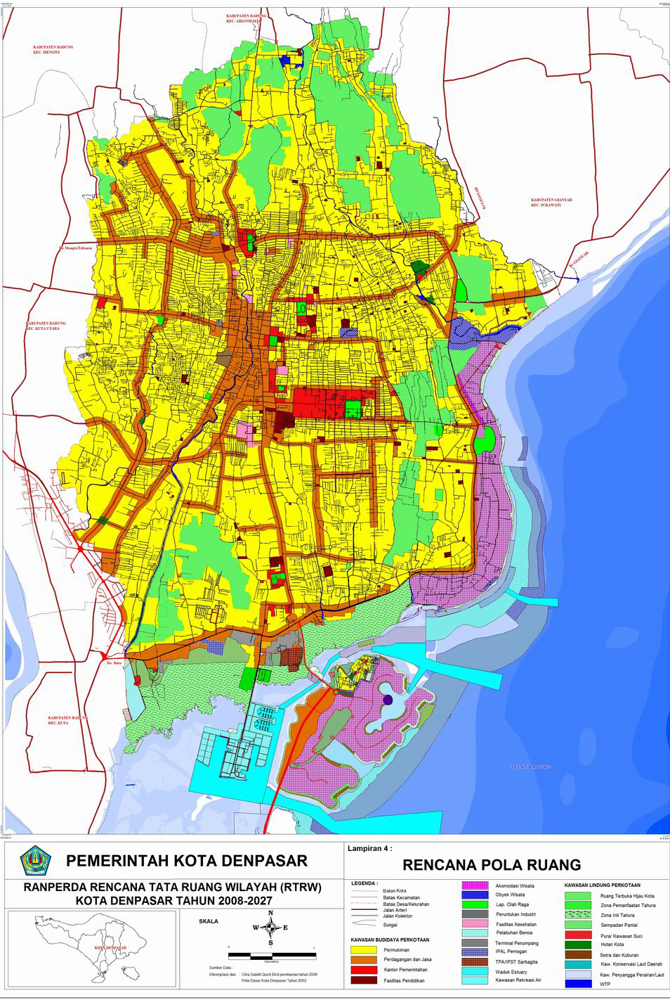
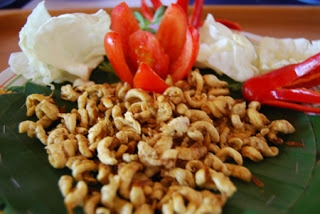
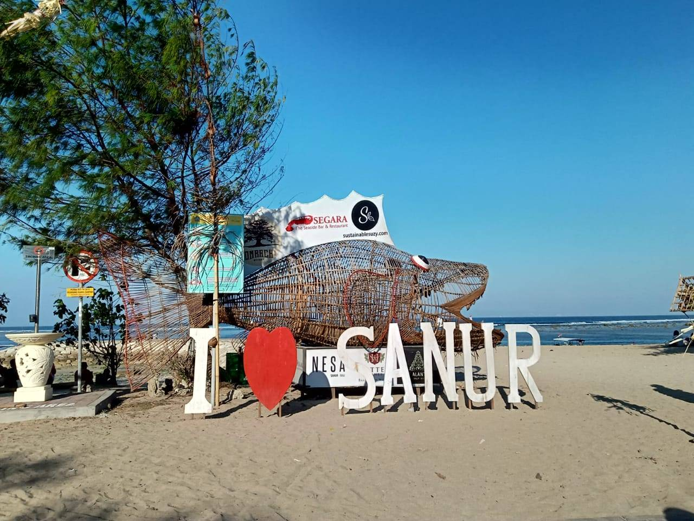

Sejarah

Kota Denpasar didirikan oleh I Gusti Ngurah Made Pemecutan yang merupakan keturunan dari puri pemecutan.
Nama Denpasar muncul pada saat wilayah yang dahulunya disebut sebagai wilayah Badung ini dipimpin oleh dua kerajaan yaitu puri Pemecutan
dan Puri Jambe Ksatrya. Nama denpasar sendiri terdiri dari dua kata yaitu “den” yang berarti utara dan “pasar” yang berarti pasar.
Nama ini diberikan pada taman tersebut mengingat lokasinya yang terletak di utara pasar.
Geografis

Geografi. Kota Denpasar berada pada ketinggian 0-75 meter dari permukaan laut, terletak pada posisi 8°35'31” sampai 8°44'49” Lintang Selatan dan 115°00'23” sampai 115°16'27” Bujur Timur.
Sementara luas wilayah Kota Denpasar 127,78 km² atau 2,18% dari luas wilayah Provinsi Bali.
Kuliner Kota Denpasar
Kuliner memilki berbagai macam makanan khas yang unik dan wajib untuk dicoba oleh wisatawan lokal maupun asing, jika berkunjung ke kota Denpasar.
Ayam Betutu

Keberadaan kuliner ayam betutu di Bali sudah melekat di hati orang Indonesia terkhusus wisatawan yang sering berkunjung ke Bali. Makanan khas Bali ini mempunyai ciri rasa yang spesial.
Perpaduan rasa pedas dengan aroma rempah-rempah yang kuat berhasil menjadikan olahan ayam betutu berkesan dilidah penikmatnya.
Kerupuk Klejat

Camilan khas Denpasar ini terbuat dari siput atau kerang laut. Diberi nama klejat karena berarti kerang laut. Proses pembuatan camilan ini hanya dengan mengeringkan siput atau kerang laut yang sudah dibersihkan lalu ditaburi garam dan digoreng.
Anda dapat menemukan Krupuk Klejat di daerah Serangan.
Wisata
Denpasar adalah ibukota dari Provinsi Bali yang sangat terkenal. Hampir setiap orang menjadikan tempat ini sebagai destinasi wisata untuk berlibur. Anda bisa menjumpai banyak destinasi wisata terbaik disini.
Untuk lebih jelasnya, berikut beberapa rekomendasi tempat wisata di Denpasar Bali yang lagi hits dikunjungi wisatawan.
Pantai Sanur

Wisata yang pertama adalah pantai sanur. Tempat ini adalah tujuan utama pengunjung yang ingin menikmati keindahan pantai di Denpasar. Pantai ini selalu ramai oleh turis lokal maupun mancanegara.
Wisata ini adalah spot paling cocok untuk menyaksikan pemandangan matahari terbit yang eksotis.
Ombak yang ada di wisata ini pun juga menjadi pilihan yang tepat untuk para pengunjung yang senang berselancar.
Bajra Sandhi Renon

Bangunan ini dibuat untuk memperingati kemerdekaan Indonesia. Namun,
karena desainnya yang menyerupai pagoda membuat masyarakat menganggap tempat ini sebagai tempat ibadah untuk umat budha.
Untuk masuk ke wisata ini pengunjung dikenakan tarif yang terjangkau. Fasilitas yang ditawarkan pun lengkap.
Pengunjung bisa menjumpai tempat makan, area parkir hingga perpustakaan.